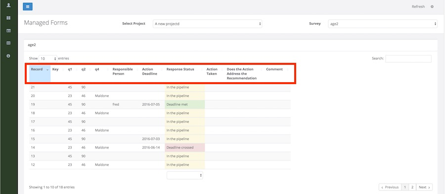
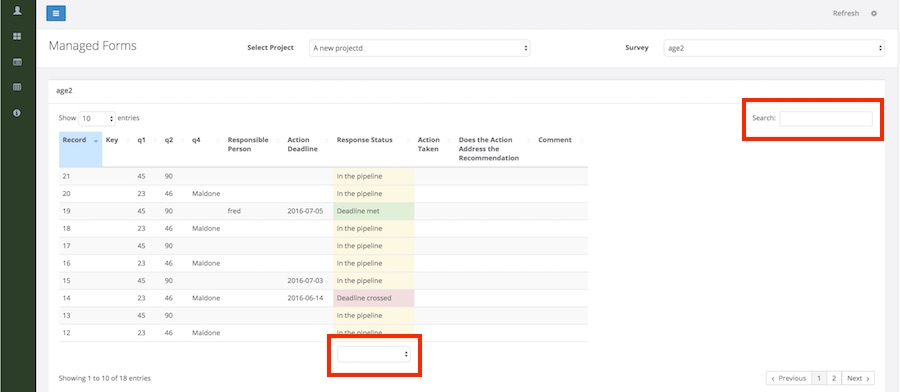
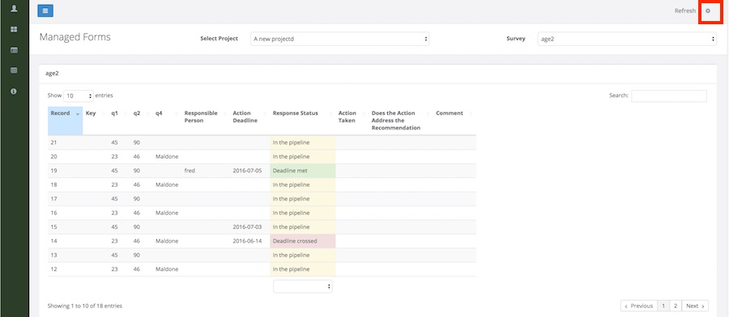

Purpose
Managed forms can be used to annotate survey records. For example you can add a status value to the submitted data.
You cannot edit the results submitted with the form, you can only change the management data such as the status
Making a Form "Managed"
Forms are not automatically available on the managed forms page. You need to go first to the Management module and specify the type of management you want to apply. Once you have added management to a form then you can manage it under the webforms module.
Commands
Edit
Click on a row in the data table to edit the managed data.
Sort
Click on a name in the table heading to sort by that column. To change the sort order click on the heading name again.

Filtering
Select a value from the list boxes underneath some columns in order to filer on that column. You can also enter some text in the search box to only view records that have that text.
If you select a value from the list box under a column then to remove that filter select the blank option
Showing different columns
You can only sort or filter on columns that are shown in the table. However in order to stop the table from getting too big you may want to hide some columns. Columns can be shown or hidden by selecting the config menu option.
